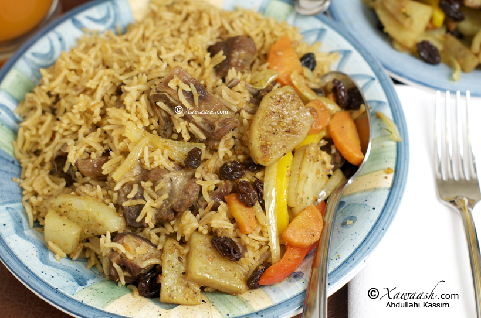

Rice & Goat Meat

Description
A staple dish in Somali-speaking parts of the world, Rice and Goat Meat (Somali: Isku-dhex-karis) is a widely popular dish made from rice and goat meat along with your favorite vegetables, all cooked in a broth that is simmered down over hours.
It is often prepared for the weekends and special occasions like family gatherings.
Ingredients
- 2 lb. Goat meat (we used frozen)
- 1 Onion (sliced)
- 5 Garlic cloves (minced)
- 3 Cinnamon sticks (3 inches long)
- 8 Cloves
- 8 Cardamom pods
- 1/2 cup Vegetable or canola oil
- 3 Tbsp Vegetable seasoning
- 1 Tbsp Xawaash
- 3 Tomatoes (large) pureed
- 6 cups Sella basmati rice
- 12 cups Water (boiling)
Steps
- Wash the rice until the water runs clear. This may take 3 or 4 times of washing and draining. After washing well, cover the rice with sufficient water and let it soak for 2 hours.
- In the meantime, wash the goat meat after defrosting (if you are using frozen goat meat). On medium heat, saute the onions in the oil, then add the minced garlic, cinnamon sticks, cardamom, and cloves. Add the goat meat and xawaash and brown the meat. Add the pureed tomatoes then cover and cook on medium heat for 15 minutes.
- After the 15 minutes, add 12 cups of boiling water to the pot. The proportion is 2 cups of water for each cup of rice. Cover and cook for 1½ hours until the meat becomes fork tender. Drain the rice and add the pot. Stir well then cover and cook on low heat for 10 minutes.
- After the 10 minutes have elapsed, stir well then cover and cook on low heat for a further 10 minutes to finish cooking the rice.